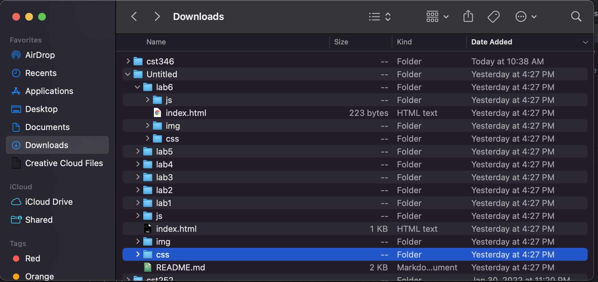

Lab's Subject
The idea of this lab was to further create a local file structure on our computer and add index.html files.
Stephanie's Corner
Challenges
For this lab, I didn't really run into any problems. It was pretty easy creating the file structure, so I got the hang of it prett quick. The only struggle me and my partner really had was just being able to collaborate on the same file strucutre within Atom. We ran into a few difficulties but were able to figure things out.
Results
If everything done correctly, this is the final look for this lab. You should be able to see the final product.

Screenshots
Here are some screenshots taken from this lab:
Lab 3 Screenshots

Home Page Screenshots


Robert's Corner
Challenges
My main challenge for this Lab was working with Atom and writing css without auto-complete like there is in Dreamweaver. I had a problem where my image was showing locally but wasnt showing on the hosted site. I've never ran into this issue before, I think it's because I'm used to Dreamweaver writing my filepaths for me, but other than that and some issues with teletype this lab went good.
Results
File structure below
Screenshots
Screenshots from this lab.
Lab 3 Screenshots
NOTE: Screenshot for this part is the same as Stephanie's since we worked together on the html file and screenshots are the similar.